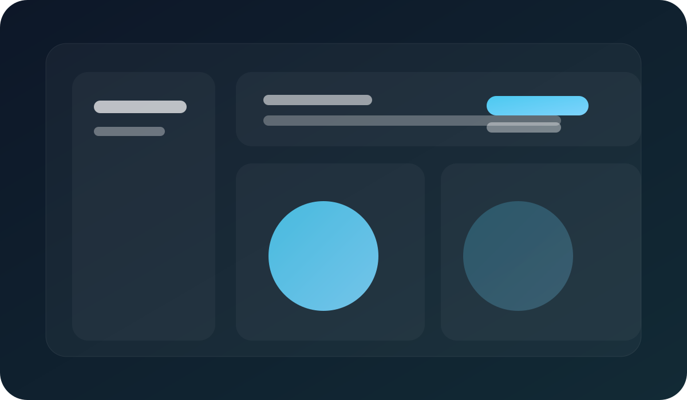

Product design
Aurora
A polished landing page concept for a subscription product, built around a clear sign-up path, feature hierarchy, and a warm gradient visual language.
Open case studyPortfolio
Each project below includes a screenshot-style image, a short summary, and a direct link to its detail page. The set covers product design, editorial layout, and data presentation.
Product design
A polished landing page concept for a subscription product, built around a clear sign-up path, feature hierarchy, and a warm gradient visual language.
Open case study
Editorial layout
A curated showcase for class work and visual experiments, focused on image flow, concise captions, and an easy-to-scan page rhythm.
Open case study
Dashboard design
A compact status dashboard that organizes tasks, milestones, and metrics into a calm interface for quick decision making.
Open case study